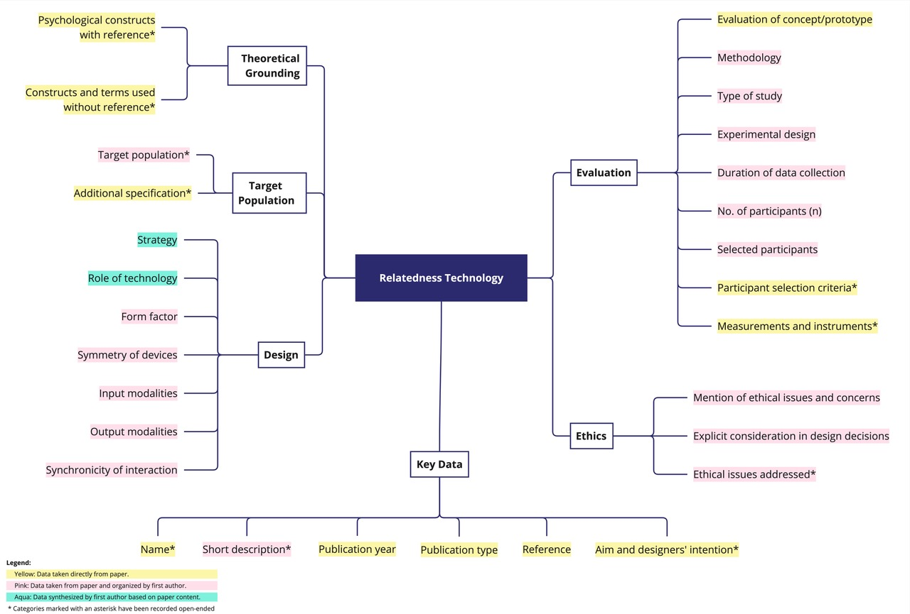

HOW TO USE CORE?
Explore the Compendium
Easily browse the full collection of relatedness technologies, filter entries by category, or perform keyword searches to find specific topics of interest.
Discover Patterns and Relationships
Take advantage of our visualization tools to uncover patterns and relationships within the dataset, helping you navigate relatedness technologies effectively.
Papers and projects that used CORE
You can use CORE in your publictions and reference a specific version of it, as the compendium will be updated annually. You can locate the version number in our github repository for each branch of CORE.
Offline Access
Prefer offline access? Download the database and explore independently without requiring web access. If you want to filter the database according to specific criteria, or if you want to count, for example, the number of concepts or prototypes that use a certain output modality, a certain psychological construct, or all evaluations in field studies, we recommend that you download the database. There, you can explore it according to your needs.
Categories
CORE uses various categories that can be used to compare technologies. An overview is given in the following chart.

Download the Database